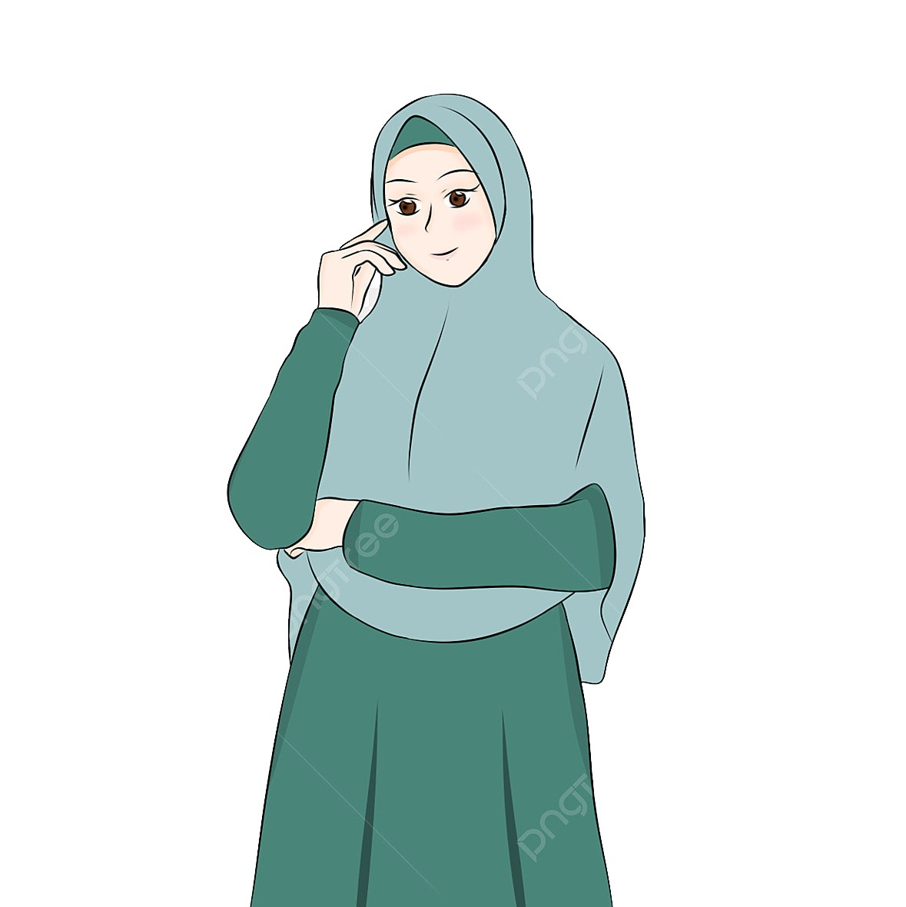

Arta Shaqiri

Hello, I am Arta Shaqiri and I live in Gjilan.
I am a Traffic and Transport engineer, and continue my master's studies in the
Thermoenergetics and Renewable Energy direction.
I like programming and i am learning Java Script programming language.
I think that I am communicative and committed to work. I like to travel and learn new knowledge and
experiences.
Education
- Primary School
- Shkolla Fillore "Thimi Mitko"(2000-2009)
- Hight School
- Shkolla e mesme "Zenel Hajdini" (2009-2012)
- University
- Bachelor's degree in Traffic and Transport from the University of Prishtina (2013-2017)
- Master degree in Thermoenergetics and Renewable Energy from University of Prishtina (2021-2023)
My skills
| # | Thermal turbomachines | Heat Transfer | Design in engineering | Mathematic | Pressure vessel |
|---|---|---|---|---|---|
| Rating | 10.0 | 9.0 | 8.0 | 8.0 | 8.0 |